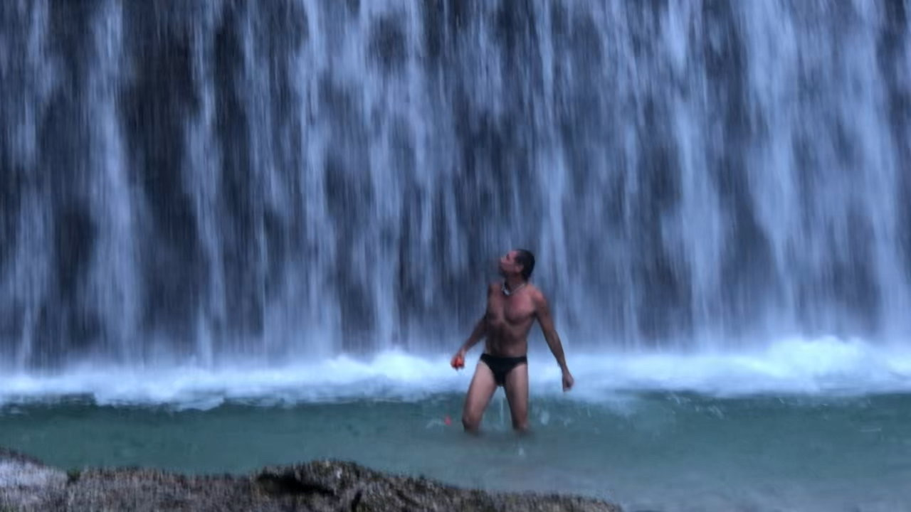
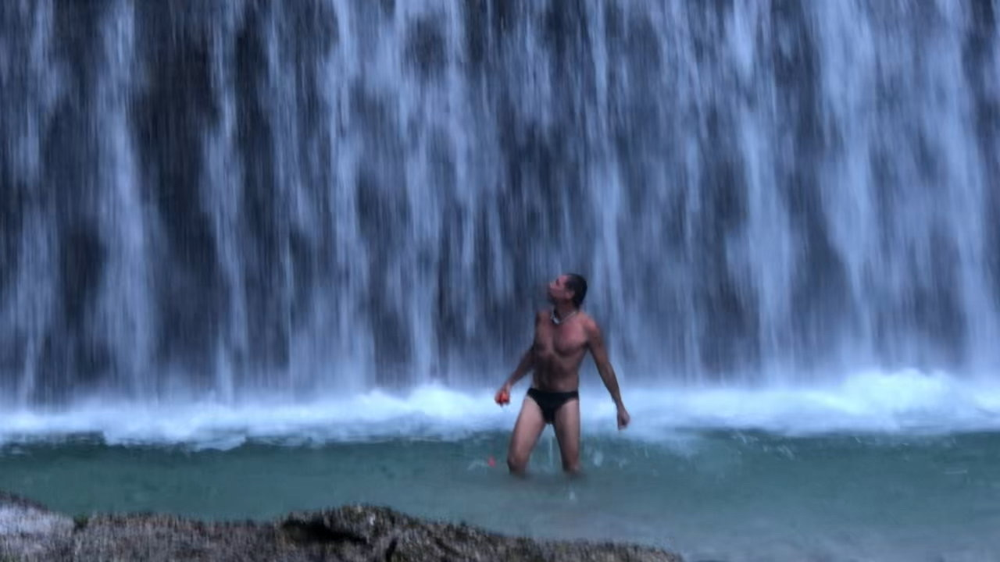

Una passeggiata (molto particolare) lungo il Brenta
Gennaio-Febbraio 2026 • Pag. 62-63
L'articolo che presenta Reitia Protocol
1° Gennaio 2026 | Bassano del Grappa
Rito di passaggio tra grappa, ghiaccio e archetipi veneti
ISCRIVITI ORAIl 1° gennaio, alle 10:30, un piccolo gruppo farà qualcosa che Bassano non ha mai visto: un rito iniziatico tra il ponte di Palladio, le acque del Brenta, e la tradizione della dea Reitia.
Il freddo è medicina. L'immersione in acqua 9-12°C attiva proteine che normalmente dormono: BDNF (neurogenesi), RBM3 (rigenerazione), endocannabinoidi (anti-infiammazione). Non pillole. Il corpo che si ripara da solo.
Dante attraversò l'Inferno per rinascere. Palladio progettò il ponte come soglia di contemplazione. I Paleoveneti offrivano oggetti votivi alla dea Reitia. Bassano è stratificata di simboli. Questo evento li riattiva attraverso il corpo, non solo la testa.
Viviamo in un mondo di scorciatoie: pillole per dormire, app per meditare, retreat per "trovare se stessi". Ma alcune cose non hanno scorciatoie. Il freddo non mente. Il corpo non mente. Il territorio non mente. Questo è un rito antico fatto oggi. Nessuna finzione.
Vuoi iniziare il 2026 diversamente. Non con promesse vuote ma con un atto concreto. Se cerchi esperienze che lasciano il segno, non selfie da dimenticare.
Se senti che la "normalità" mainstream è diventata tossica. Se vuoi essere testa di ponte.
Se il freddo non ti spaventa. O se ti spaventa ma vuoi attraversarlo comunque.
Cerchi una sfida folkloristica. Un selfie da postare. Un "l'ho fatto anch'io" senza sostanza.
Se il freddo ti blocca. Nessun giudizio: ciascuno di noi segue un suo percorso.
Il richiamo della tua terra ancora non risuona.
Ritrovo al Ponte di Palladio. Storia e archetipi culturali: Ponte come soglia di contemplazione, Dante e l'attraversamento, Reitia e i Paleoveneti. Preparazione al rito.
Respirazioni con iperventilazione controllata e apnea. Creazione di talismano in creta (inciso, diviso in due, metà per te dopo la cottura, metà lanciata in Brenta esprimendo un desiderio).
Camminata rituale alla spiaggia di Angarano (6 minuti). Immersione nelle acque del Brenta. Principianti (piedi/gambe) o avanzati (integrale). Lancio di talismano esprimendo un desiderio.
Rivestizione, afterdrop, bevanda calda. Passeggiata di ritorno. Sosta contemplativa sul Ponte Palladio.
Grappino rituale. Visita alla Pala di Jacopo Bassano (Chiesa SS Trinità): oca e colomba come simboli di attraversamento di soglie tra terra, acqua, aria. Con il fuoco della cottura ceramica, i quattro elementi si completano.
Momento conviviale di chiusura. Rito sciamanico di passaggio dell'anno.
3.5 ore | 10:30-14:00
ISCRIVITI⚠️ Posti limitati a 35 partecipanti | Iscrizioni aperte fino a esaurimento posti

 


Architetto | Facilitatore metodo dell'Ipersoglia
Originario di Bassano del Grappa, attualmente vive a Stoccolma. Ha sviluppato il metodo dell'Ipersoglia integrando immersione fredda, stratificazione culturale e pratiche somatiche. Fondatore di Stockholm IceBrrreakers (240+ membri, 3 anni di attività). Pubblica stabilmente su Bassano News dal 2024.
Maestro ceramista. Creazione e cottura di talismani di tradizione paleoveneta.
Storico ed esperto del territorio. Intervento dal vivo al Monastero di Santa Croce.
Testata giornalistica locale. Media partner per comunicazione territoriale.
"I cannot recommend Claudio and the Stockholm Icebrrreakers meetup highly enough. Joining this group has been genuinely life-changing. Claudio is not just a facilitator; he is a knowledgeable, committed, and inspiring guide who is passionate about cold bathing, food, and holistic health. His expertise truly shines, and he provides fascinating conversation and great exercises to kickstart the day. He helped me understand the science and benefits behind the practice. I was initially hesitant, but Claudio gently and effectively pushed me to incorporate daily cold baths and swimming into my routine. The results have been incredible—my energy, focus, and overall well-being have dramatically improved. If you are looking for an expert who can help you unlock the transformative power of cold exposure and healthy living, look no further than Claudio! He is truly one of a kind!"
"L'immersione in Subiolo è stata un'esperienza davvero intensa e inaspettata. Il bagno in acqua a nove gradi mi ha colpito profondamente: è stato un momento di forte connessione con la natura e con il mio corpo. Da allora, ho continuato a fare bagni freddi e ne sto traendo enormi benefici, sia fisici che mentali. La cosa che mi aiuta sempre molto è il respiro lento, profondo e diaframmatico. È incredibile come un'esperienza così semplice possa portare un tale senso di benessere e vitalità!"
OBBLIGATORIO: Scarpette da bagno (sassi scivolosi), costume, asciugamano grande o accappatoio, vestiti di ricambio completi in zaino/borsa impermeabile.
CONSIGLIATO: Berretto di lana, guanti, giacca calda per post-immersione.
L'evento si svolge con qualsiasi meteo. In caso di pioggia, adattiamo la sequenza (respirazioni/talismano al riparo) ma l'immersione avviene comunque. La pioggia fa parte dell'esperienza.
Sì. Livello principiante: immergi solo piedi/gambe (1-2 minuti). Livello avanzato: immersione integrale. Scegli tu in base a come ti senti. La preparazione respiratoria aiuta ogni livello.
La metà che tieni va in cottura l'1 gennaio. Ritiro 2-3 gennaio (orari e luogo comunicati dopo l'evento). Chi non lo può ritirare: spedizione +€5-10.
Fino a esaurimento dei 35 posti. Ti consigliamo di iscriverti subito per garantirti il posto.
TUTTO. Grappa rituale, talismano ceramica (tuo dopo cottura), visita guidata Pala Jacopo Bassano, formazione culturale/scientifica/spirituale, sicurezza, documentazione foto/video. Porta solo costume, asciugamano e voglia di attraversare.
Dopo l'iscrizione compilando il modulo, ricevi un'email con IBAN. Anticipo del 50% conferma posto. Saldo il giorno dell'evento. Oppure 100% anticipato.
L'immersione in acqua fredda non è consigliata per: gravidanza, problemi cardiaci gravi, epilessia non controllata, Raynaud severo. In caso di dubbi, consulta il medico prima di iscriverti. La dichiarazione liberatoria di responsabilità è obbligatoria.
Articoli di Claudio Calderoni su territorio, cultura paleoveneta e pratiche rigenerative
Gennaio-Febbraio 2026 • Pag. 62-63
L'articolo che presenta Reitia Protocol
Novembre-Dicembre 2025 • Pag. 20-21
Gennaio-Febbraio 2025 • Pag. 27-28
Settembre-Ottobre 2024 • Pag. 62
Marzo-Aprile 2024 • Pag. 61